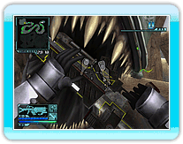

13 |
Shake-Off System |
 |
|
Onslaught has 2 Shake-Off Systems that utilize the unique controls of the Nunchuk and Wii Remote.
 Bug blood will splatter when you attack enemy creatures at point-blank range. Being splattered by large amounts will block your field of vision. Also, having too much bug blood on you will cause you to take damage continuously.
Bug blood will splatter when you attack enemy creatures at point-blank range. Being splattered by large amounts will block your field of vision. Also, having too much bug blood on you will cause you to take damage continuously.
You can shake off the blood by swinging the Nunchuk. *You will not be sprayed with blood when attacking with the beam whip.
During battle, some enemy creatures may latch on to you. When this happens, your controls will be disabled and you will take damage as long as the creature stays on you.
You can shake off the creature by rapidly swinging the Nunchuk and the Wii Remote. |
 |
 |
 |